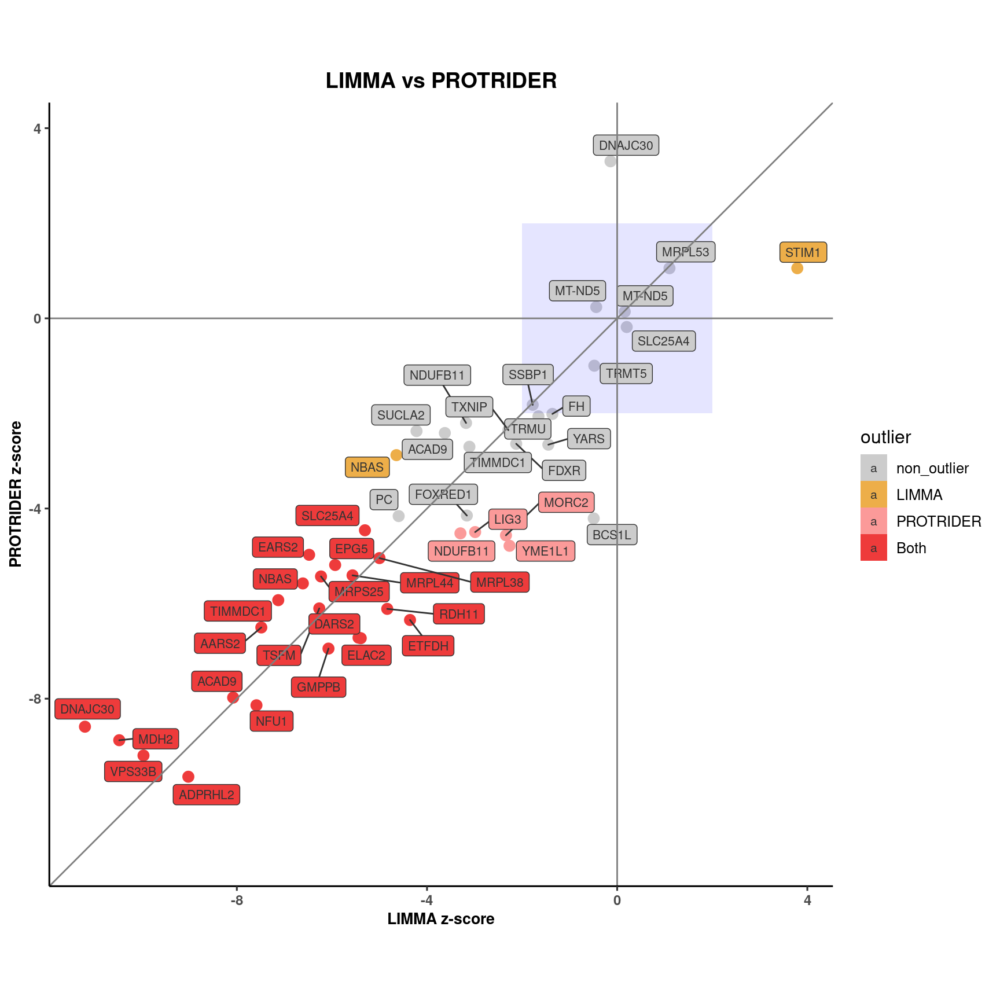

# load functions
source(snakemake@input$config)
source("src/functions/LIMMA/limma_functions.R")
# Load sample annotation
sa <- fread(snakemake@input$sample_annotation)
# sa <- fread('/s/project/mitoMultiOmics/multiOMICs_integration/raw_data/proteomics_annotation.tsv')
sa <- sa[USE_FOR_PROTEOMICS_PAPER == T]
sa <- sa[!is.na(KNOWN_MUTATION)]
sa[ , sample_gene := paste0(SAMPLE_ID, "_", KNOWN_MUTATION )]
# Load LIMMA results
limmar <- readRDS(snakemake@input$limma_results) %>% as.data.table()
#limmar <- readRDS("/s/project/mitoMultiOmics/multiOMICs_integration/processed_data/limma/LIMMA_results.rds") %>% as.data.table()
# Remove TASP1 gene. This gene has a bad detection rate and was not detected in this sample.
# Intensity value was imputed.
limmar <- limmar[!(SAMPLE_ID == "OM30476" & geneID == "TASP1") ]
limmar <- limmar[SAMPLE_ID %in% sa$SAMPLE_ID ]
# Load PROTRIDER results
protr <- readRDS(snakemake@input$protrider_results) %>% as.data.table()
# protr <- readRDS("/s/project/mitoMultiOmics/multiOMICs_integration/processed_data/protrider/PROTRIDER_results.rds") %>% as.data.table()
# Remove TASP1 gene. This gene has a bad detection rate and was not detected in this sample.
# Intensity value was imputed.
protr <- protr[!(SAMPLE_ID == "OM30476" & geneID == "TASP1") ]
protr <- protr[SAMPLE_ID %in% sa$SAMPLE_ID ]
#combine
prot <- merge(limmar, protr, by = c("SAMPLE_ID", "geneID") , all = T)
prot[, sample_gene := paste0(SAMPLE_ID, "_", geneID )]
prot[, causal_gene := sample_gene %in% sa$sample_gene]
prot[, outlier := "non_outlier"]
prot[PROTEIN_outlier.x == T , outlier := "LIMMA"]
prot[PROTEIN_outlier.y == T , outlier := "PROTRIDER"]
prot[PROTEIN_outlier.x == T & PROTEIN_outlier.y == T , outlier := "Both"]
outlier_colors <- c( "non_outlier" = "gray80",
"LIMMA" = "#edae49",
"PROTRIDER" = "#FB9A99",
"Both" = "brown2")
range <- c(prot[causal_gene == T ]$PROTEIN_ZSCORE.x, prot[causal_gene == T]$PROTEIN_ZSCORE.y)
ggplot(data = prot[causal_gene == T ], aes(PROTEIN_ZSCORE.x, PROTEIN_ZSCORE.y, color= outlier)) +
geom_point(size = 3) +
annotate("rect", xmin = -2, xmax = 2, ymin = -2, ymax = 2, alpha = .1, fill = "blue")+
geom_label_repel(aes(label= geneID , fill = outlier ), color = "gray20", size = 2.8)+
xlab("LIMMA z-score") +
ylab("PROTRIDER z-score") +
geom_abline( color = "grey50") +
geom_vline(xintercept = 0, color = "grey50") +
geom_hline(yintercept = 0, color = "grey50") +
scale_color_manual(breaks = c("non_outlier","LIMMA","PROTRIDER", "Both"), values = outlier_colors)+
scale_fill_manual(breaks = c("non_outlier","LIMMA","PROTRIDER", "Both"), values = outlier_colors)+
coord_fixed( xlim = c( min(range , na.rm = T) , max(range , na.rm = T) ), ylim = c( min(range , na.rm = T), max(range, na.rm = T) )) +
ggtitle("LIMMA vs PROTRIDER")+
theme_classic2()+
theme(plot.title = element_text(size=14, hjust = 0.5, face="bold"),
axis.title.x= element_text( size=10, margin = NULL,face="bold"),
axis.title.y= element_text( size=10, margin = NULL,face="bold"),
axis.text.x= element_text( size=9, margin = NULL,face="bold"),
axis.text.y= element_text( size=9, margin = NULL,face="bold"))

IyctLS0KIycgdGl0bGU6IFByb3RyaWRlciB2cyBMSU1NQSAgICAgIAojJyBhdXRob3I6IHNtaXJub3ZkCiMnIHdiOgojJyAgaW5wdXQ6CiMnICAtIGNvbmZpZzogJ3NyYy9jb25maWcuUicKIycgIC0gc2FtcGxlX2Fubm90YXRpb246ICdgc20gY29uZmlnWyJBTk5PVEFUSU9OIl1gJwojJyAgLSBwcm90cmlkZXJfcmVzdWx0czogJ2BzbSBjb25maWdbIlBST0NfREFUQSJdICsgIi9wcm90cmlkZXIvUFJPVFJJREVSX3Jlc3VsdHMucmRzImAnCiMnICAtIGxpbW1hX3Jlc3VsdHM6ICdgc20gY29uZmlnWyJQUk9DX0RBVEEiXSArICIvbGltbWEvTElNTUFfcmVzdWx0cy5yZHMiYCcKIycgIG91dHB1dDoKIycgb3V0cHV0OiAKIycgICBodG1sX2RvY3VtZW50OgojJyAgICBjb2RlX2ZvbGRpbmc6IGhpZGUKIycgICAgY29kZV9kb3dubG9hZDogVFJVRQojJy0tLQoKCiMgbG9hZCBmdW5jdGlvbnMKc291cmNlKHNuYWtlbWFrZUBpbnB1dCRjb25maWcpCnNvdXJjZSgic3JjL2Z1bmN0aW9ucy9MSU1NQS9saW1tYV9mdW5jdGlvbnMuUiIpCgoKIyBMb2FkIHNhbXBsZSBhbm5vdGF0aW9uCnNhIDwtIGZyZWFkKHNuYWtlbWFrZUBpbnB1dCRzYW1wbGVfYW5ub3RhdGlvbikKIyBzYSA8LSBmcmVhZCgnL3MvcHJvamVjdC9taXRvTXVsdGlPbWljcy9tdWx0aU9NSUNzX2ludGVncmF0aW9uL3Jhd19kYXRhL3Byb3Rlb21pY3NfYW5ub3RhdGlvbi50c3YnKQpzYSA8LSBzYVtVU0VfRk9SX1BST1RFT01JQ1NfUEFQRVIgPT0gVF0Kc2EgPC0gc2FbIWlzLm5hKEtOT1dOX01VVEFUSU9OKV0Kc2FbICwgc2FtcGxlX2dlbmUgOj0gcGFzdGUwKFNBTVBMRV9JRCwgIl8iLCBLTk9XTl9NVVRBVElPTiApXQoKCiMgTG9hZCBMSU1NQSByZXN1bHRzCmxpbW1hciA8LSByZWFkUkRTKHNuYWtlbWFrZUBpbnB1dCRsaW1tYV9yZXN1bHRzKSAlPiUgYXMuZGF0YS50YWJsZSgpCiNsaW1tYXIgPC0gcmVhZFJEUygiL3MvcHJvamVjdC9taXRvTXVsdGlPbWljcy9tdWx0aU9NSUNzX2ludGVncmF0aW9uL3Byb2Nlc3NlZF9kYXRhL2xpbW1hL0xJTU1BX3Jlc3VsdHMucmRzIikgJT4lIGFzLmRhdGEudGFibGUoKQojIFJlbW92ZSBUQVNQMSBnZW5lLiBUaGlzIGdlbmUgaGFzIGEgYmFkIGRldGVjdGlvbiByYXRlIGFuZCB3YXMgbm90IGRldGVjdGVkIGluIHRoaXMgc2FtcGxlLiAKIyBJbnRlbnNpdHkgdmFsdWUgd2FzIGltcHV0ZWQuCmxpbW1hciA8LSBsaW1tYXJbIShTQU1QTEVfSUQgPT0gIk9NMzA0NzYiICYgZ2VuZUlEID09ICJUQVNQMSIpIF0KbGltbWFyIDwtIGxpbW1hcltTQU1QTEVfSUQgJWluJSBzYSRTQU1QTEVfSUQgXQoKCiMgTG9hZCBQUk9UUklERVIgcmVzdWx0cwpwcm90ciA8LSByZWFkUkRTKHNuYWtlbWFrZUBpbnB1dCRwcm90cmlkZXJfcmVzdWx0cykgJT4lIGFzLmRhdGEudGFibGUoKQojIHByb3RyIDwtIHJlYWRSRFMoIi9zL3Byb2plY3QvbWl0b011bHRpT21pY3MvbXVsdGlPTUlDc19pbnRlZ3JhdGlvbi9wcm9jZXNzZWRfZGF0YS9wcm90cmlkZXIvUFJPVFJJREVSX3Jlc3VsdHMucmRzIikgJT4lIGFzLmRhdGEudGFibGUoKQojIFJlbW92ZSBUQVNQMSBnZW5lLiBUaGlzIGdlbmUgaGFzIGEgYmFkIGRldGVjdGlvbiByYXRlIGFuZCB3YXMgbm90IGRldGVjdGVkIGluIHRoaXMgc2FtcGxlLiAKIyBJbnRlbnNpdHkgdmFsdWUgd2FzIGltcHV0ZWQuCnByb3RyIDwtIHByb3RyWyEoU0FNUExFX0lEID09ICJPTTMwNDc2IiAmIGdlbmVJRCA9PSAiVEFTUDEiKSBdCnByb3RyIDwtIHByb3RyW1NBTVBMRV9JRCAlaW4lIHNhJFNBTVBMRV9JRCBdCgoKCgoKI2NvbWJpbmUKcHJvdCA8LSBtZXJnZShsaW1tYXIsIHByb3RyLCBieSA9IGMoIlNBTVBMRV9JRCIsICJnZW5lSUQiKSAsIGFsbCA9IFQpCnByb3RbLCBzYW1wbGVfZ2VuZSA6PSBwYXN0ZTAoU0FNUExFX0lELCAiXyIsIGdlbmVJRCApXQpwcm90WywgY2F1c2FsX2dlbmUgOj0gc2FtcGxlX2dlbmUgJWluJSBzYSRzYW1wbGVfZ2VuZV0KCnByb3RbLCBvdXRsaWVyIDo9ICJub25fb3V0bGllciJdCnByb3RbUFJPVEVJTl9vdXRsaWVyLnggPT0gVCAsIG91dGxpZXIgOj0gIkxJTU1BIl0KcHJvdFtQUk9URUlOX291dGxpZXIueSA9PSBUICwgb3V0bGllciA6PSAiUFJPVFJJREVSIl0KcHJvdFtQUk9URUlOX291dGxpZXIueCA9PSBUICAmIFBST1RFSU5fb3V0bGllci55ID09IFQgLCBvdXRsaWVyIDo9ICJCb3RoIl0KCgpvdXRsaWVyX2NvbG9ycyA8LSBjKCAgIm5vbl9vdXRsaWVyIiA9ICJncmF5ODAiLAogICAgICAgICAgICAgICAgICAgICAgIkxJTU1BIiA9ICIjZWRhZTQ5IiwgCiAgICAgICAgICAgICAgICAgICAgICAiUFJPVFJJREVSIiA9ICIjRkI5QTk5IiwgIAogICAgICAgICAgICAgICAgICAgICAgIkJvdGgiID0gImJyb3duMiIpCgoKCgpyYW5nZSA8LSBjKHByb3RbY2F1c2FsX2dlbmUgPT0gVCBdJFBST1RFSU5fWlNDT1JFLngsIHByb3RbY2F1c2FsX2dlbmUgPT0gVF0kUFJPVEVJTl9aU0NPUkUueSkKCiMrIGZpZy53aWR0aD05LCBmaWcuaGVpZ2h0PTkKZ2dwbG90KGRhdGEgPSBwcm90W2NhdXNhbF9nZW5lID09IFQgXSwgYWVzKFBST1RFSU5fWlNDT1JFLngsIFBST1RFSU5fWlNDT1JFLnksIGNvbG9yPSBvdXRsaWVyKSkgKwogIGdlb21fcG9pbnQoc2l6ZSA9IDMpICsKICBhbm5vdGF0ZSgicmVjdCIsIHhtaW4gPSAtMiwgeG1heCA9IDIsIHltaW4gPSAtMiwgeW1heCA9IDIsIGFscGhhID0gLjEsIGZpbGwgPSAiYmx1ZSIpKwogIGdlb21fbGFiZWxfcmVwZWwoYWVzKGxhYmVsPSBnZW5lSUQgLCBmaWxsID0gb3V0bGllciApLCBjb2xvciA9ICJncmF5MjAiLCBzaXplID0gMi44KSsgCiAgeGxhYigiTElNTUEgei1zY29yZSIpICsgCiAgeWxhYigiUFJPVFJJREVSIHotc2NvcmUiKSArCiAgZ2VvbV9hYmxpbmUoIGNvbG9yID0gImdyZXk1MCIpICsKICBnZW9tX3ZsaW5lKHhpbnRlcmNlcHQgPSAwLCBjb2xvciA9ICJncmV5NTAiKSArCiAgZ2VvbV9obGluZSh5aW50ZXJjZXB0ID0gMCwgY29sb3IgPSAiZ3JleTUwIikgKwogIHNjYWxlX2NvbG9yX21hbnVhbChicmVha3MgPSBjKCJub25fb3V0bGllciIsIkxJTU1BIiwiUFJPVFJJREVSIiwgIkJvdGgiKSwgdmFsdWVzID0gb3V0bGllcl9jb2xvcnMpKwogIHNjYWxlX2ZpbGxfbWFudWFsKGJyZWFrcyA9IGMoIm5vbl9vdXRsaWVyIiwiTElNTUEiLCJQUk9UUklERVIiLCAiQm90aCIpLCB2YWx1ZXMgPSBvdXRsaWVyX2NvbG9ycykrCiAgY29vcmRfZml4ZWQoIHhsaW0gPSBjKCBtaW4ocmFuZ2UgLCBuYS5ybSA9IFQpICwgbWF4KHJhbmdlICwgbmEucm0gPSBUKSApLCAgeWxpbSA9IGMoIG1pbihyYW5nZSAsIG5hLnJtID0gVCksICBtYXgocmFuZ2UsIG5hLnJtID0gVCkgICkpICsgCiAgZ2d0aXRsZSgiTElNTUEgdnMgUFJPVFJJREVSIikrCiAgdGhlbWVfY2xhc3NpYzIoKSsKICB0aGVtZShwbG90LnRpdGxlID0gZWxlbWVudF90ZXh0KHNpemU9MTQsIGhqdXN0ID0gMC41LCBmYWNlPSJib2xkIiksCiAgICAgICAgYXhpcy50aXRsZS54PSBlbGVtZW50X3RleHQoIHNpemU9MTAsIG1hcmdpbiA9IE5VTEwsZmFjZT0iYm9sZCIpLAogICAgICAgIGF4aXMudGl0bGUueT0gZWxlbWVudF90ZXh0KCBzaXplPTEwLCBtYXJnaW4gPSBOVUxMLGZhY2U9ImJvbGQiKSwKICAgICAgICBheGlzLnRleHQueD0gZWxlbWVudF90ZXh0KCBzaXplPTksIG1hcmdpbiA9IE5VTEwsZmFjZT0iYm9sZCIpLAogICAgICAgIGF4aXMudGV4dC55PSBlbGVtZW50X3RleHQoIHNpemU9OSwgbWFyZ2luID0gTlVMTCxmYWNlPSJib2xkIikpCgoKCgoKCgoKCgoKCg==